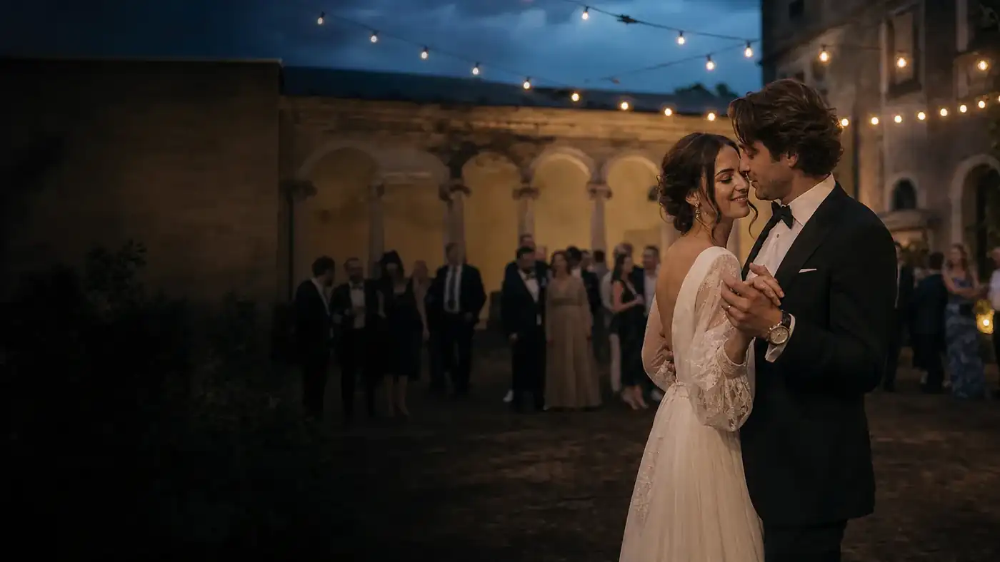
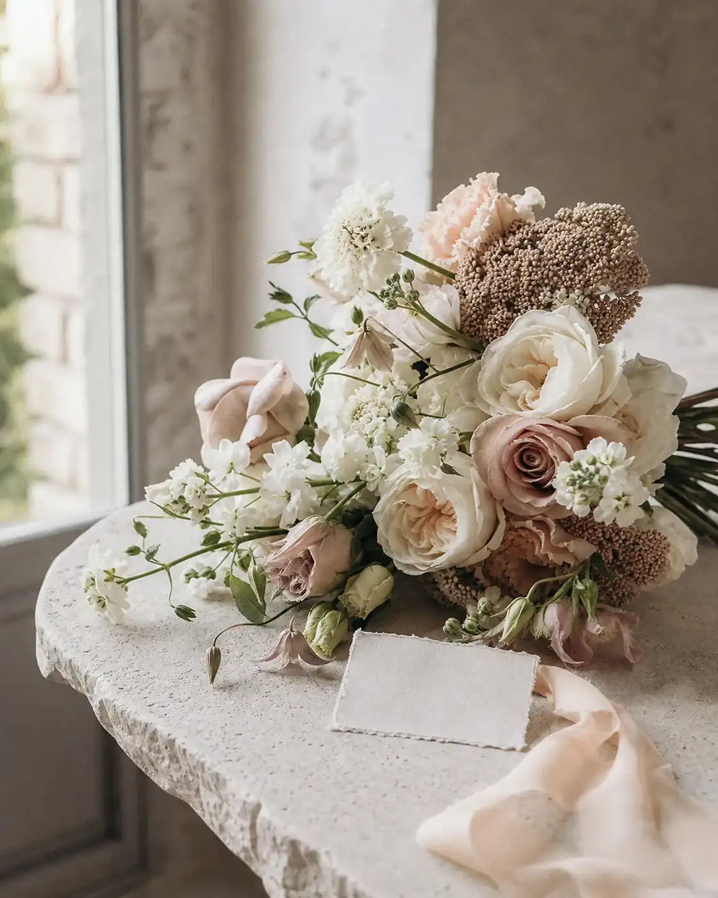
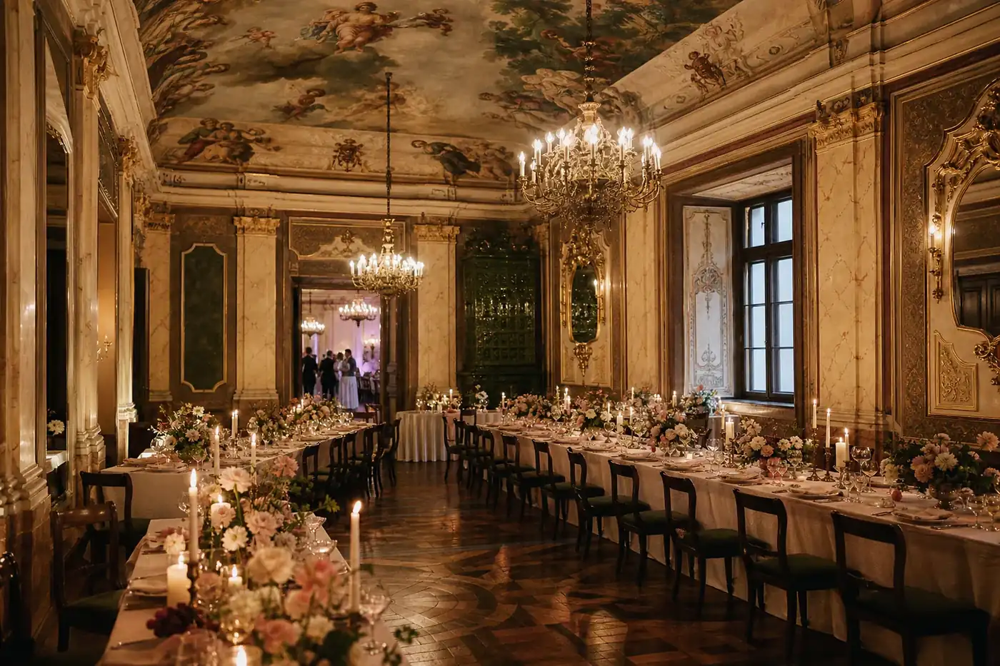
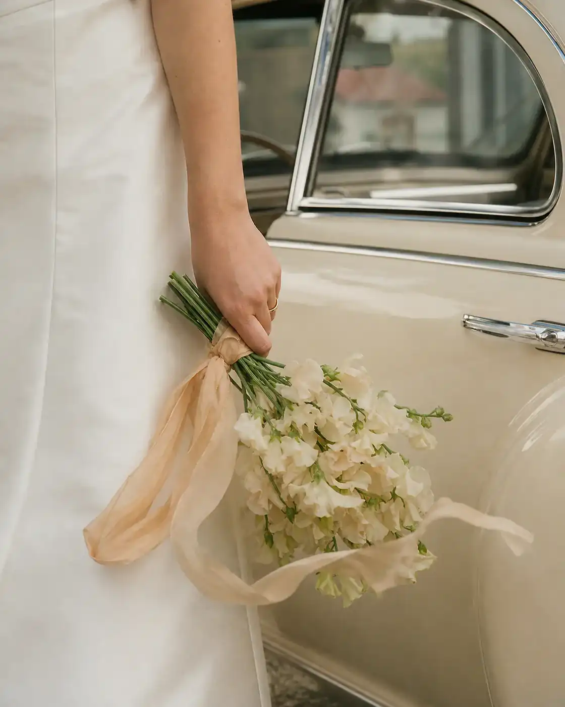
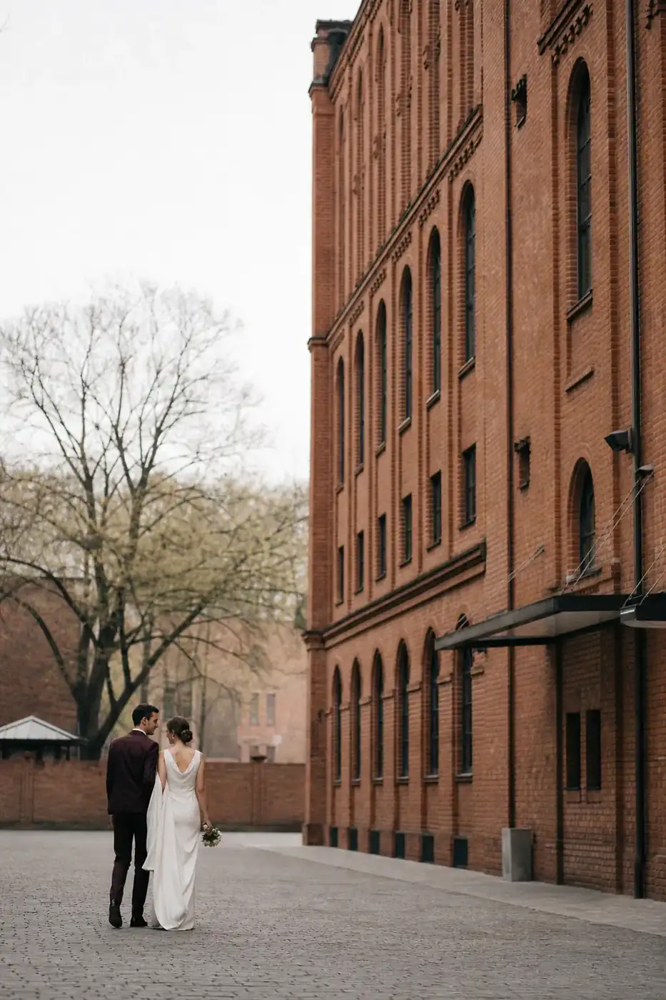
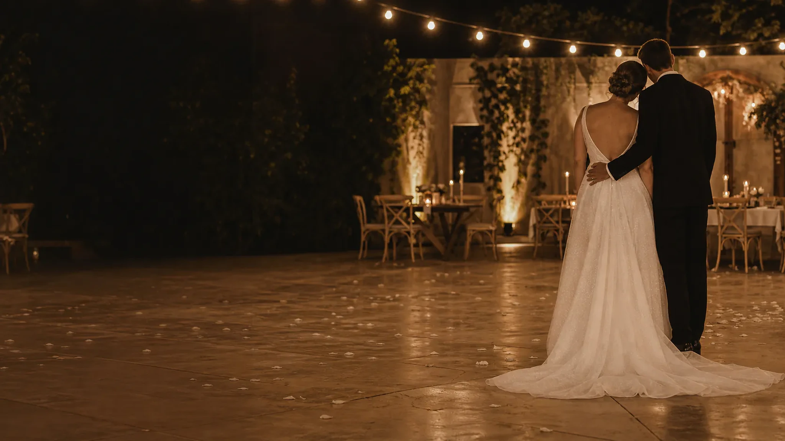

WESELA AUTORSKIE / POLSKA / 2026
Wasz dzień nie potrzebuje scenariusza. Potrzebuje rytmu.
Projektujemy i produkujemy autorskie wesela w Polsce, od pierwszej rozmowy do chwili, kiedy plan przestaje być potrzebny.
Zobacz, jak płynie dzień ↓


Nie dekorujemy dla zdjęcia.
Projektujemy atmosferę, którą pamięta się przez temperaturę światła, dźwięk rozmów i sposób, w jaki przestrzeń prowadzi gości.
Piękny kadr trwa sekundę. Dobry rytm utrzymuje cały dzień.
Za każdym spokojnym przejściem stoją decyzje o dostawcach, czasie, dźwięku, serwisie i odpowiedzialności.
Jeden dzień.
Pięć zmian światła.
Każda pora ma inne tempo, potrzeby gości i zadanie produkcyjne. Wybierz moment, żeby zobaczyć plan ukryty pod atmosferą.


Poranek jest cichy tylko dla Was.
W tle powstają strefy, przyjeżdżają kwiaty, papeteria trafia na właściwe miejsce, a każdy dostawca potwierdza gotowość.
- Papier
- plan stołów, winietki, oznaczenia i ostatnia korekta nazwisk
- Światło
- ustawienie zastane, techniczne i moment przejścia do wieczoru
- Serwis
- kolejność wejścia zespołów i gotowość przed pierwszym gościem



Ceremonia ma własny oddech.
Wejścia, muzyka i układ przestrzeni są zsynchronizowane, ale zostawiają miejsce na prawdziwą emocję.
- Widocznośćgoście rozumieją, gdzie patrzeć i którędy przejść
- Dźwiękmikrofony i muzyka są sprawdzone przed wejściem
- Plan Bdecyzja pogodowa ma godzinę graniczną i właściciela
Dwa miejsca. Dwa różne rytmy.
Nie przenosimy jednego stylu między realizacjami. Materiał miejsca, pora roku i sposób świętowania wyznaczają kierunek.


Gość nie powinien czytać harmonogramu, żeby wiedzieć, co dalej.
Przestrzeń, światło i obecność zespołu prowadzą bez komunikatów wygłaszanych co pięć minut.
- Przyjazdczytelne wejście, szatnia i pierwsza osoba kontaktowa
- Ceremonianaturalne przejście bez cofania grupy
- Kolacjatempo serwisu zsynchronizowane z przemowami
- Parkiettechnika i bar gotowe zanim zmieni się energia
- Powróttransport i ostatnie wyjazdy bez angażowania pary
Spokojna głowa to konkretna odpowiedzialność.
Zakres ustalamy na początku. Bez niejasnego „dopilnujemy wszystkiego”.
Kompleksowa organizacja od budżetu do końca nocy
Koncepcja, budżet, miejsce, dostawcy, harmonogram, goście i pełna produkcja dnia. Orientacyjny próg całej produkcji w tej koncepcji zaczyna się od 110 000 zł.
Kameralna celebracja do 30 osób
Intymna ceremonia lub kolacja, w której jakość doświadczenia jest ważniejsza niż skala.
Koordynacja dnia gdy plan już istnieje
Przejmujemy komunikację z zespołem i realizację przygotowanego wcześniej planu.
Budżet jest projektem decyzji, nie jedną liczbą.
Próg zależy od miejsca, liczby gości, zakresu techniki, scenografii, serwisu i logistyki. Poniższa mapa jest demonstracyjna.
Każda decyzja ma właściciela.
Plan działa wtedy, gdy wiadomo, kto decyduje, kto wykonuje i do której godziny można zmienić kierunek.
OBSZARLUNEADOSTAWCAPARA
harmonogramprowadzi i aktualizujepotwierdza gotowośćzatwierdza priorytety
pogodauruchamia decyzjęwykonuje wariantzna godzinę graniczną
gościeprowadzi komunikację dniaobsługuje swoją strefęprzekazuje wyjątki wcześniej
Dobry plan znika we właściwym momencie.
- Rozmowa
priorytety, granice i budżet
- Kierunek
miejsce, zakres i wspólny język wizualny
- Projekt
dostawcy, umowy i kolejne decyzje
- Produkcja
harmonogram, technika i logistyka
- Obecność
w dniu wesela jesteśmy tam, gdzie nas nie widać
Ostatni tydzień nie służy do wymyślania wesela od nowa.
Służy do zamknięcia przekazań, potwierdzenia ludzi i zabezpieczenia wariantów.
- −7 dnifinalna lista, transport, alergie, godziny dostaw
- −3 dniodprawa dostawców i wersja planu B
- −1 dzieńostatnie przekazanie odpowiedzialności zespołowi
- dzień 0para nie zarządza produkcją

A potem zostaje już tylko noc.
Opowiedzcie nam o swoim dniuPytania przed pierwszą rozmową.
Odpowiedzi zależą od zakresu i miejsca, dlatego nie obiecujemy dostępności ani wyceny przed briefem.
Kiedy najlepiej zacząć współpracę?
Im szerszy zakres i bardziej oblegany termin, tym wcześniej warto porozmawiać. Konkretna dostępność wymaga potwierdzenia.
Czy pracujecie poza Warszawą?
Koncepcja zakłada realizacje w Polsce. Logistyka i koszty zespołu są liczone dla konkretnego miejsca.
Czy możemy zachować własnych dostawców?
Tak, po sprawdzeniu zakresu, umów i odpowiedzialności. Kluczowe jest wspólne działanie w jednym harmonogramie.
Czy próg 110 000 zł jest wyceną?
Nie. To orientacyjna granica tej koncepcji portfolio, a nie oferta. Realny budżet powstaje po liczbie gości, miejscu i zakresie.
Pierwsza rozmowa zaczyna się od czterech faktów.
Formularz działa lokalnie i przygotowuje podsumowanie. Niczego nie wysyła.